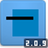
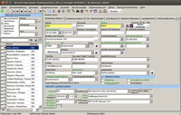

SchILD-NRW
Dieser Artikel wurde für die folgenden Ubuntu-Versionen getestet:
Ubuntu 14.04 Trusty Tahr
Zum Verständnis dieses Artikels sind folgende Seiten hilfreich:

SchILD-NRW  ist das offizielle Schulverwaltungsprogramm für öffentliche Schulen in Nordrhein-Westfalen. Es wird von der Landesregierung gepflegt und kostenlos für Windows bereitgestellt. Linux und Mac OS X werden offiziell nicht unterstützt. Für den Einsatz unter Linux ist daher eine Installation in einer Wine-Umgebung notwendig.
ist das offizielle Schulverwaltungsprogramm für öffentliche Schulen in Nordrhein-Westfalen. Es wird von der Landesregierung gepflegt und kostenlos für Windows bereitgestellt. Linux und Mac OS X werden offiziell nicht unterstützt. Für den Einsatz unter Linux ist daher eine Installation in einer Wine-Umgebung notwendig.
Voraussetzungen¶
Grundlage ist zunächst eine Installation von Wine sowie des Skripts winetricks. Beide können direkt aus den offiziellen Paketquellen installiert werden [1]:
wine (universe)
winetricks (universe, zur Erweiterung der Wine-Installation)
 mit apturl
mit apturl
Paketliste zum Kopieren:
sudo apt-get install wine winetricks
sudo aptitude install wine winetricks
winetricks¶
Anschließend wird Wine um die Module mdac28, jet40, msls31, riched30 und vb6run erweitert:
winetricks mdac28 jet40 msls31 riched30 vb6run
Hinweis:
Kommt es bei Jet40 zu einer Fehlermeldung, siehe die Problembehebung unten!
Installation¶
Auf der offiziellen Download-Seite  sind mehrere Dateien zu finden:
sind mehrere Dateien zu finden:
SchILDBasisSetup.exe
SchILDToolsSetup.exe (optional, u.a. extNotMod.exe (Noteneingabe) und LuPo42 (Kursverwaltung))
SchILDupdate_*.exe
Alle drei Pakete werden heruntergeladen und durch einen Doppelklick nacheinander in der Wine-Umgebung installiert.
Bedienung¶
 Das SCHilD-Installation legt automatisch eine Verknüpfung auf dem Desktop an. Das Programm kann dann über diese gestartet werden[2]. Alternativ kann das Programm auch über ein Terminal aufgerufen werden:
wine ~/.wine/drive_c/SchILD-NRW/SCHILD2000.exe
Zur Nutzung sei auf die ausführliche Dokumentation auf der Homepage verwiesen.
Problembehebung¶
.dll-Datei hinzufügen¶
Um den SchILD-Start zu ermöglichen, muss evtl noch eine dll-Datei der Wine-Installation hinzugefügt werden. Die Datei fontsub.dll kann im Internet gefunden werden und muss anschließend unter:
~/.wine/drive_c/windows/system32/ (für 32-bit-Systeme) oder
~/.wine/drive_c/windows/syswow64/ (für 64-bit-Systeme) gespeichert werden.
Alternativ kann der folgende Befehl im Terminal eingegeben werden: [3]
32-bit-Systeme:
wget -P ~/.wine/drive_c/windows/system32/ http://dllfiles.free.fr/dllfiles/fontsub.dll
64-bit-Systeme:
wget -P ~/.wine/drive_c/windows/syswow64/ http://dllfiles.free.fr/dllfiles/fontsub.dll
Jet40-Installation¶
Die Fehlermeldung zu Jet40
jet40 install completed, but installed file /home/BENUTZER/.wine/dosdevices/c:/Program Files/Common Files/Microsoft Shared/dao/dao360.dll not found
kann behoben werden, indem der Ordner dao samt Inhalt aus dem Verzeichnis /home/BENUTZER/.wine/drive_c/Program Files/Common Files in das Verzeichnis /home/BENUTZER/.wine/drive_c/Program Files (x86)/Common Files kopiert wird
EncodeClasses2.dll¶
Bei einigen Programmfunktion, die eine Option des Schlüsseltools benötigen, kann es zu einer Fehlermeldung kommen. Zur Lösung muss die dll-Datei EncodeClasses2.dll der Wine-Installation hinzugefügt werden. Dazu wird die Datei von der offiziellen SchILD-Seite der Landesregierung heruntergeladen und im passenden wine-Verzeichnis gespeichert. Dies geschieht über folgenden Befehl im Terminal: [3]
32-bit-Systeme:
wget -P ~/.wine/drive_c/windows/system32/ http://schulverwaltungsprogramme.msw.nrw.de/download/EncodeClasses2.dll
64-bit-Systeme:
wget -P ~/.wine/drive_c/windows/syswow64/ http://schulverwaltungsprogramme.msw.nrw.de/download/EncodeClasses2.dll
Hinweis:
Laut Homepage der Schulverwaltungssoftware muss die Datei EncodeClasses2.dll noch registriert werden. Dies ist unter Linux nicht möglich, bereitet anscheinend aber auch keine Probleme.
- Erstellt mit Inyoka
-
 2004 – 2017 ubuntuusers.de • Einige Rechte vorbehalten
2004 – 2017 ubuntuusers.de • Einige Rechte vorbehalten
Lizenz • Kontakt • Datenschutz • Impressum • Serverstatus -
Serverhousing gespendet von